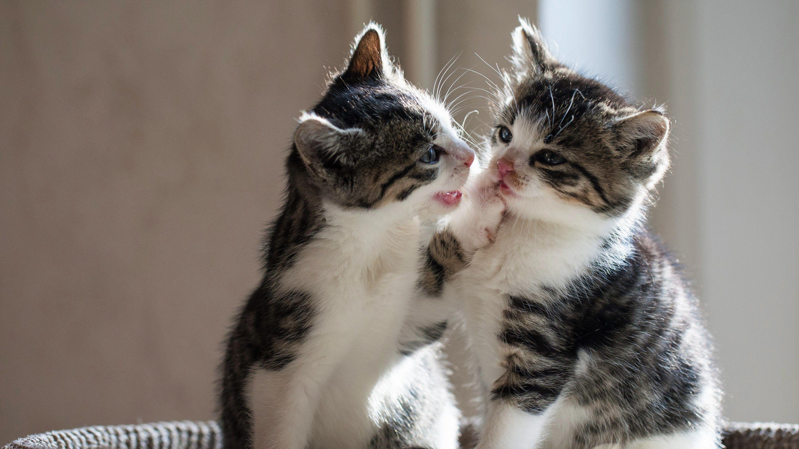

HOME
ABOUT
BLOG
About the Topic: The Enduring Appeal of Cute Cat Photos

In the digital age, where attention spans are short and content is
constantly evolving, one thing remains timeless—our collective love for
cute cat photos. Whether shared on social media, used in memes, or
featured in home decor, cats have carved a permanent place in visual
culture. Their expressive faces, quirky behavior, and undeniable charm
make them the perfect subjects for heartwarming and entertaining content.
This article focuses on two particularly adorable cats captured in a
tender moment of stillness and companionship. More than just an image,
it’s a snapshot that reminds us of the simple joys in life: connection,
comfort, and the peaceful presence of animals. Cute cat photos aren’t just
about aesthetics—they often spark emotional responses, reduce stress, and
even bring people together across cultures and continents. By exploring
the story and atmosphere behind this image, the article dives into why
these two furry friends are so much more than just photogenic pets—they're
tiny symbols of joy in an often overwhelming world.